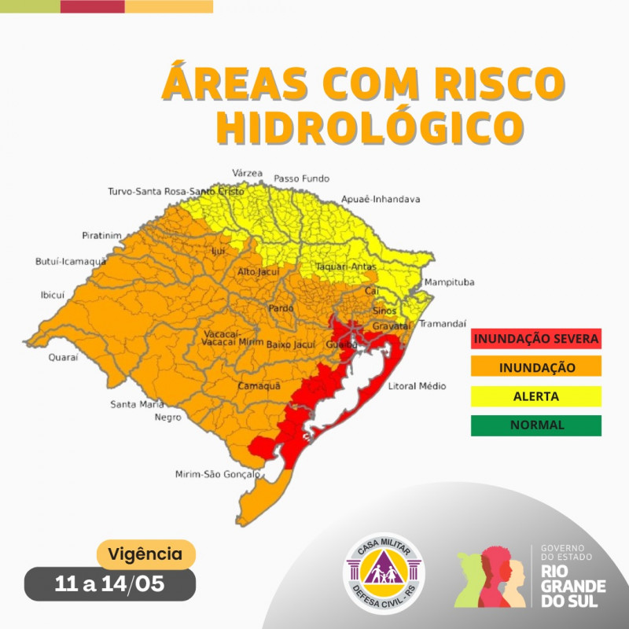
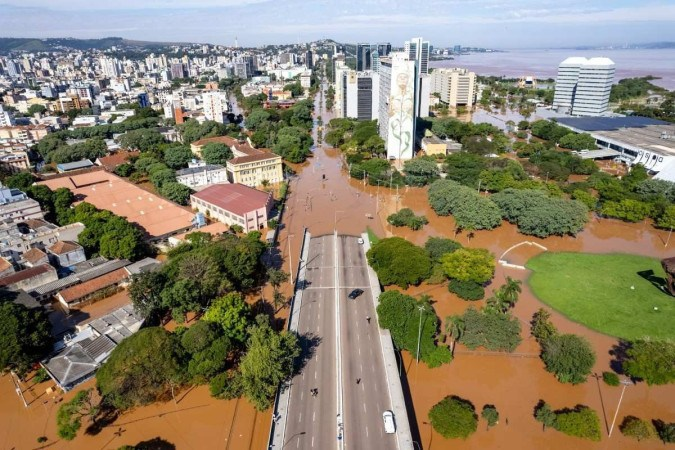
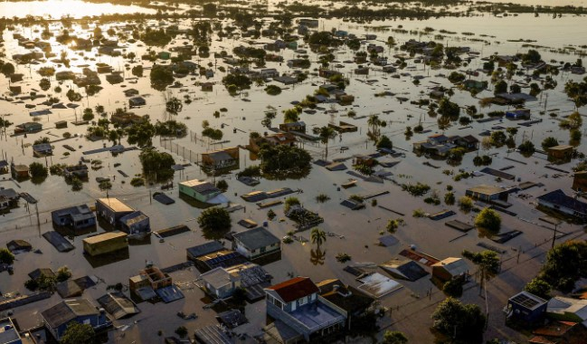

Vigilância
O monitoramento de enchentes é crucial para a segurança pública e a proteção da propriedade. Com informações precisas e em tempo real, comunidades podem se preparar melhor para os riscos associados a enchentes e tomar medidas preventivas para minimizar danos.
Esta página oferece informações atualizadas sobre a situação das enchentes em nossa região, incluindo dados em tempo real, previsões meteorológicas, alertas, e mapas das áreas afetadas. Nosso objetivo é fornecer um recurso valioso para os cidadãos e autoridades locais na tomada de decisõesinformadas.
Previsão do Tempo
Tempo em Alegrete
23 °C
Nublado
Umidade: 67%
Áreas de Risco
Publicação do Mapa: 19/05/2024 às 23h00min
Essas são as principais áreas de risco do estado:
Para mais informações acesse: Defesa Civil - Área de Risco Hidrológico
Histórico de Desastres
Nos últimos meses, enfrentamos um dos piores desastres naturais já registrados, com repercussão internacional e manchetes ao redor do mundo, para informar do ocorrido aqui estão alguns registros dos estragos feitos pela água:"
Porto-Alegre-RS
